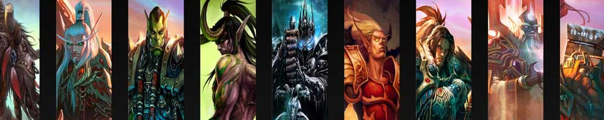

|  |
| Home Types of PvPClasses Rewards Popular Arena Teams |
|
Hunters pull, use threat redirection, crowd control, and primarily ranged damage. Hunters have pets that add to their DPS, add group- and raid- wide buffs, and help manage aggro. They can also track, tame, and train animals and beasts found in the wild. The well trained pet, on countless occasions, has saved a hunter's life. They are the only class that can name, feed, and 'train' their pets; they can also be 'trained' to have one of three specializations: Ferocity for burst DPS, Cunning for utility, and Tenacity for tanking. This specialization can be switched at any time when not in combat or dead. Hunters excel in outdoor survival skills, such as tracking and laying traps. They wear leather and cloth armor until level 40, at which they gain access to mail armor. Hunters start with a gun, crossbow, or bow. They can use all other weapon skills except wands, maces, and two-handed maces, but melee weapons are purely for vanity's sake, as the hunter's abilities focus on ranged attacks. They are unable to use shields or plate armor. Hunters use many shots that either deal damage or apply a status effect that costs focus to use. Food and drink does not replenish focus; instead, the only source is by using certain abilities or by having it replenish naturally over time. Most other abilities are free to use such as Mend Pet or their Trap abilities. They can take on various Animal Aspects that grant special abilities, such as improved run speed, or additional ranged attack power. |
Brendan Davey Monica DuCong'e Erik Eyler Kayleen Garcia Katie Hyche Ryan Moeller |
Christine O'Brien Alex Recinos Julia Schwartz Madeleine Schwartz Ann Marie Skjold Ashly Wilkins |
Content derived from WoWWiki. |